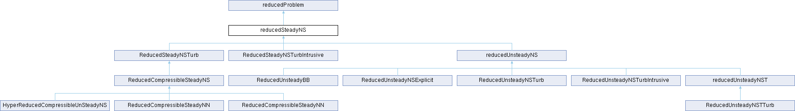

Loading...
Searching...
No Matches
Class where it is implemented a reduced problem for the steady Navier-stokes problem. More...
#include <ReducedSteadyNS.H>

Public Member Functions | |
| reducedSteadyNS () | |
| Construct Null. | |
| reducedSteadyNS (steadyNS &problem) | |
| Construct Null. | |
| void | solveOnline_PPE (Eigen::MatrixXd vel_now) |
| Method to perform an online solve using a PPE stabilisation method. | |
| void | solveOnline_sup (Eigen::MatrixXd vel_now) |
| Method to perform an online solve using a supremizer stabilisation method. | |
| void | reconstruct_PPE (fileName folder="./ITHACAoutput/online_rec", int printevery=1) |
| Method to reconstruct a solution from an online solve with a PPE stabilisation technique. | |
| void | reconstruct (bool exportFields=false, fileName folder="./ITHACAoutput/online_rec", int printevery=1) |
| Method to reconstruct the solutions from an online solve. | |
| void | reconstructLiftAndDrag (steadyNS &problem, fileName folder) |
| Method to compute the reduced order forces. | |
| double | inf_sup_constant () |
| Method to evaluate the online inf-sup constant. | |
| Eigen::MatrixXd | setOnlineVelocity (Eigen::MatrixXd vel) |
| Sets the online velocity. | |
| Public Member Functions inherited from reducedProblem | |
| reducedProblem () | |
| Construct Null. | |
| reducedProblem (reductionProblem &problem) | |
| Construct with reduced Problem. | |
| virtual void | solveOnline () |
| Virtual Method to perform and online Solve. | |
Public Attributes | |
| ITHACAparameters * | para |
| parameters to be read from the ITHACAdict file | |
| Eigen::MatrixXd | vel_now |
| Online inlet velocity vector. | |
| Eigen::MatrixXd | fTau |
| Reduced matrix for tangent forces. | |
| Eigen::MatrixXd | fN |
| Reduced matrix for normal forces. | |
| Eigen::VectorXd | y_old |
| Vector to store the previous solution during the Newton procedure. | |
| Eigen::VectorXd | y |
| Vector to store the solution during the Newton procedure. | |
| scalar | nu |
| Reduced viscosity in case of parametrized viscosity. | |
| List< Eigen::MatrixXd > | online_solution |
| List of Eigen matrices to store the online solution. | |
| PtrList< volVectorField > | Umodes |
| List of pointers to store the modes for velocity. | |
| PtrList< volScalarField > | Pmodes |
| List of pointers to store the modes for pressure. | |
| PtrList< volVectorField > | Usnapshots |
| List of pointers to store the snapshots for velocity. | |
| PtrList< volScalarField > | Psnapshots |
| List of pointers to store the snapshots for pressure. | |
| PtrList< volScalarField > | PREC |
| Reconstructed pressure field. | |
| PtrList< volVectorField > | UREC |
| Recontructed velocity field. | |
| PtrList< volScalarField > | pRecFields |
| Reconstructed pressure fields list. | |
| PtrList< volVectorField > | uRecFields |
| Recontructed velocity fields list. | |
| newton_steadyNS | newton_object |
| Newton object used to solve the non linear problem. | |
| steadyNS * | problem |
| Pointer to the FOM problem. | |
| int | Nphi_u |
| Number of velocity modes. | |
| int | Nphi_p |
| Number of pressure modes. | |
| int | Nphi_sup |
| Number of supremizer modes. | |
| int | N_BC |
| Number of parametrized boundary conditions. | |
| int | count_online_solve = 1 |
| Counter to count the online solutions. | |
| Eigen::MatrixXd | tauU |
| Penalty Factor. | |
| Public Attributes inherited from reducedProblem | |
| scalar | nu |
| Viscosity. | |
| reductionProblem * | problem |
| Pointer to FOAM problem. | |
Additional Inherited Members | |
| Static Public Member Functions inherited from reducedProblem | |
| static Eigen::MatrixXd | solveLinearSys (List< Eigen::MatrixXd > LinSys, Eigen::MatrixXd x, Eigen::VectorXd &residual, const Eigen::MatrixXd &bc=Eigen::MatrixXd::Zero(0, 0), const std::string solverType="fullPivLu") |
| Linear system solver for the online problem. | |
| static Eigen::MatrixXd | solveLinearSys (List< Eigen::MatrixXd > LinSys, Eigen::MatrixXd x, Eigen::VectorXd &residual, const std::string solverType) |
| Linear system solver for the online problem. | |
Class where it is implemented a reduced problem for the steady Navier-stokes problem.
In this class are implemented the methods to solve a reduced version of the stationary Navier-stokes equations. This class must be used together with the steadyNS class
Definition at line 85 of file ReducedSteadyNS.H.
| reducedSteadyNS::reducedSteadyNS | ( | ) |
Construct Null.
Definition at line 39 of file ReducedSteadyNS.C.
|
explicit |
Construct Null.
| [in] | problem | a full order steadyNS problem |
| [in] | tipo | Type of pressure stabilisation method you want to use "SUP" for supremizer, "PPE" for pressure Poisson equation. |
Definition at line 44 of file ReducedSteadyNS.C.
|
inline |
Definition at line 101 of file ReducedSteadyNS.H.
| double reducedSteadyNS::inf_sup_constant | ( | ) |
Method to evaluate the online inf-sup constant.
Definition at line 295 of file ReducedSteadyNS.C.
| void reducedSteadyNS::reconstruct | ( | bool | exportFields = false, |
| fileName | folder = "./ITHACAoutput/online_rec", | ||
| int | printevery = 1 ) |
Method to reconstruct the solutions from an online solve.
| [in] | exportFields | A boolean variable which determines whether to export fields or not |
| [in] | folder | The folder where to output the solutions in case on wants to |
| [in] | printevery | The printevery variabel, when it is 1 the function outputs all stored fields |
Definition at line 249 of file ReducedSteadyNS.C.
| void reducedSteadyNS::reconstruct_PPE | ( | fileName | folder = "./ITHACAoutput/online_rec", |
| int | printevery = 1 ) |
Method to reconstruct a solution from an online solve with a PPE stabilisation technique.
stabilisation method
| [in] | folder | The folder where to output the solutions |
| [in] | printevery | The printevery |
Definition at line 215 of file ReducedSteadyNS.C.
| void reducedSteadyNS::reconstructLiftAndDrag | ( | steadyNS & | problem, |
| fileName | folder ) |
Method to compute the reduced order forces.
| problem | a steadyNS full order problem. | |
| [in] | folder | The folder where to output the forces matrices |
Definition at line 317 of file ReducedSteadyNS.C.
| Eigen::MatrixXd reducedSteadyNS::setOnlineVelocity | ( | Eigen::MatrixXd | vel | ) |
Sets the online velocity.
| [in] | vel | The velocity |
Definition at line 379 of file ReducedSteadyNS.C.
| void reducedSteadyNS::solveOnline_PPE | ( | Eigen::MatrixXd | vel_now | ) |
Method to perform an online solve using a PPE stabilisation method.
| [in] | vel_now | The vector of online velocity. It is defined in with an Eigen::MatrixXd and must have one col and as many rows as the number of parametrized boundary conditions. |
Definition at line 139 of file ReducedSteadyNS.C.
| void reducedSteadyNS::solveOnline_sup | ( | Eigen::MatrixXd | vel_now | ) |
Method to perform an online solve using a supremizer stabilisation method.
| [in] | vel_now | The vector of online velocity. It is defined in with an Eigen::MatrixXd and must have one col and as many rows as the number of parametrized boundary conditions. |
Definition at line 146 of file ReducedSteadyNS.C.
| int reducedSteadyNS::count_online_solve = 1 |
Counter to count the online solutions.
Definition at line 170 of file ReducedSteadyNS.H.
| Eigen::MatrixXd reducedSteadyNS::fN |
Reduced matrix for normal forces.
Definition at line 113 of file ReducedSteadyNS.H.
| Eigen::MatrixXd reducedSteadyNS::fTau |
Reduced matrix for tangent forces.
Definition at line 110 of file ReducedSteadyNS.H.
| int reducedSteadyNS::N_BC |
Number of parametrized boundary conditions.
Definition at line 167 of file ReducedSteadyNS.H.
| newton_steadyNS reducedSteadyNS::newton_object |
Newton object used to solve the non linear problem.
Definition at line 152 of file ReducedSteadyNS.H.
| int reducedSteadyNS::Nphi_p |
Number of pressure modes.
Definition at line 161 of file ReducedSteadyNS.H.
| int reducedSteadyNS::Nphi_sup |
Number of supremizer modes.
Definition at line 164 of file ReducedSteadyNS.H.
| int reducedSteadyNS::Nphi_u |
Number of velocity modes.
Definition at line 158 of file ReducedSteadyNS.H.
| scalar reducedSteadyNS::nu |
Reduced viscosity in case of parametrized viscosity.
Definition at line 122 of file ReducedSteadyNS.H.
| List< Eigen::MatrixXd> reducedSteadyNS::online_solution |
List of Eigen matrices to store the online solution.
Definition at line 125 of file ReducedSteadyNS.H.
| ITHACAparameters* reducedSteadyNS::para |
parameters to be read from the ITHACAdict file
Definition at line 104 of file ReducedSteadyNS.H.
| PtrList<volScalarField> reducedSteadyNS::Pmodes |
List of pointers to store the modes for pressure.
Definition at line 131 of file ReducedSteadyNS.H.
| PtrList<volScalarField> reducedSteadyNS::PREC |
Reconstructed pressure field.
Definition at line 140 of file ReducedSteadyNS.H.
| PtrList<volScalarField> reducedSteadyNS::pRecFields |
Reconstructed pressure fields list.
Definition at line 146 of file ReducedSteadyNS.H.
| steadyNS* reducedSteadyNS::problem |
Pointer to the FOM problem.
Definition at line 155 of file ReducedSteadyNS.H.
| PtrList<volScalarField> reducedSteadyNS::Psnapshots |
List of pointers to store the snapshots for pressure.
Definition at line 137 of file ReducedSteadyNS.H.
| Eigen::MatrixXd reducedSteadyNS::tauU |
Penalty Factor.
Definition at line 173 of file ReducedSteadyNS.H.
| PtrList<volVectorField> reducedSteadyNS::Umodes |
List of pointers to store the modes for velocity.
Definition at line 128 of file ReducedSteadyNS.H.
| PtrList<volVectorField> reducedSteadyNS::UREC |
Recontructed velocity field.
Definition at line 143 of file ReducedSteadyNS.H.
| PtrList<volVectorField> reducedSteadyNS::uRecFields |
Recontructed velocity fields list.
Definition at line 149 of file ReducedSteadyNS.H.
| PtrList<volVectorField> reducedSteadyNS::Usnapshots |
List of pointers to store the snapshots for velocity.
Definition at line 134 of file ReducedSteadyNS.H.
| Eigen::MatrixXd reducedSteadyNS::vel_now |
Online inlet velocity vector.
Definition at line 107 of file ReducedSteadyNS.H.
| Eigen::VectorXd reducedSteadyNS::y |
Vector to store the solution during the Newton procedure.
Definition at line 119 of file ReducedSteadyNS.H.
| Eigen::VectorXd reducedSteadyNS::y_old |
Vector to store the previous solution during the Newton procedure.
Definition at line 116 of file ReducedSteadyNS.H.
 1.16.1
1.16.1